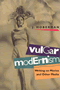

|
Cat
Culture
The Social World of a Cat Shelter
Alger, Janet M. and Steven F. Alger 256 pp
• 5.5x8.25 • Fall 2002
paper 978-1-56639-998-2
cloth 978-1-56639-997-5
|

|
The
Nazi Census
Identification and Control in the Third Reich
Aly, G�tz and Karl Heinz Roth, foreword by Edwin Black, translated
by Assenka Oksiloff 192 pp • 5.5x8.25
• Spring 2004
paper 978-1-59213-259-1
cloth 978-1-59213-199-0
|

|
Journeys
of Women in Science and Engineering
No Universal Constants
Ambrose, Susan A., Kristin L. Dunkle, Barbara B. Lazarus, Indira Nair
and Deborah A. Harkus 512 pp • 7x10 •
Spring 1997
paper 978-1-56639-528-1
cloth 978-1-56639-527-4
|

|
Death
in the Dining Room and Other Tales of Victorian Culture
Ames, Kenneth L. 280 pp • 8.5x11 •
Spring 1992
paper 978-1-56639-333-1
cloth 978-0-87722-891-2
|

|
The Wars We Inherit
Military Life, Gender Violence, and Memory
Amy, Lori E.
216 pp • 5.5x8.25 • Spring 2010
paper 978-1-59213-961-3
cloth 978-1-59213-960-6
|
|
Inventing
Vietnam
The War in Film and Television
edited by Anderegg, Michael 295 pp •
5.5x8.25 • Fall 1991
paper 978-0-87722-862-2
cloth 978-0-87722-861-5
|

|
Rethinking
College Athletics
edited by Andre, Judith and David N. James 257
pp • 6x9 • Fall 1990
paper 978-1-56639-002-6
cloth 978-0-87722-716-8
|

|
The
Unfulfilled Promise
Public Subsidy of the Arts in America
Arian, Edward
120 pp • Spring 1989
paper 978-1-56639-083-5
cloth 978-0-87722-612-3 |

|
Regarding
Animals
Arluke, Arnold and Clinton R. Sanders 256
pp • 5.5x8.25 • Spring 1996
paper 978-1-56639-441-3
cloth 978-1-56639-440-6
|

|
Just
Around the Corner
The Paradox of the Jobless Recovery
Aronowitz, Stanley 176 pp • 5.5x8.25
• Spring 2005
paper 978-1-59213-138-9
cloth 978-1-59213-137-2
|

|
Habitat
for Humanity�
Building Private Homes, Building Public Religion
Baggett, Jerome P. 360 pp • 6x9 •
Fall 2000
paper 978-1-56639-803-9
cloth 978-1-56639-802-2
|
|
'Looking
Up at Down'
The Emergence of Blues Culture
Barlow, William 464 pp • Spring 1989
paper 978-0-87722-722-9
cloth 978-0-87722-583-6 |

|
Voice
Over
The Making of Black Radio
Barlow, William 334 pp • 6x9 • Fall
1998
paper 978-1-56639-667-7
cloth 978-1-56639-666-0
|

|
Putting
on Appearances
Gender and Advertising
Barthel, Diane 232 pp • Fall 1989
paper 978-0-87722-661-1
cloth 978-0-87722-528-7
|

|
Animals at Play
Rules of the Game
Bekoff, Marc, illustrations by Michael J. DiMotta
32 pp • 10x7• Fall 2008
cloth 978-1-59213-551-6 |

|
Music, Style, and Aging
Growing Old Disgracefully?
Bennett, Andy
226 pp • 5.5x8.25 • Fall 2012
paper 978-1-4399-0808-2
cloth 978-1-4399-0807-5 |

|
Closure
The Rush to End Grief and What It Costs Us
Berns, Nancy
228 pp • 6x9 • Fall 2011
paper 978-1-4399-0577-7
cloth 978-1-4399-0576-0
|

|
Modern
American Queer History
edited by Black, Allida M. 312 pp • 7x10
• Spring 2001
paper 978-1-56639-872-5
cloth 978-1-56639-871-8
|

|
Rookies
of the Year
Bloss, Bob 224 pp • 6x9 • Spring
2005
cloth 978-1-59213-164-8
|

|
Baseball
Managers
Stats, Stories, and Strategies
Bloss, Bob 400 pp • 6x9.2 • Spring
1999
cloth 978-1-56639-661-5
|

|
Building
America
The Democratic Promise of Public Work
Boyte, Harry C. and Nancy N. Kari 272 pp •
5.5x8.25 • Spring 1996
paper 978-1-56639-458-1
cloth 978-1-56639-457-4 |

|
Boathouse Row
Waves of Change in the Birthplace of American Rowing
Brown, Dotty
288 pp • 10x8 • Fall 2016
cloth 978-1-4399-1282-9
|
|
Pastoral
Inventions
Rural Life in Nineteenth-Century American Art and Culture
Burns, Sarah 392 pp • 9x7.5 • Spring
1989
cloth 978-0-87722-580-5 |

|
The
Smoke of the Gods
A Social History of Tobacco
Burns, Eric
296 pp • 6x9 • Fall 2006
cloth 978-1-59213-480-9
|

|
The
Spirits of America
A Social History of Alcohol
Burns, Eric 344 pp • 6x9 • Fall
2003
paper 978-1-59213-269-0
cloth 978-1-59213-214-0
|

|
You
Are My Darling Zita
Busch, Glenn 304 pp • Fall 1991
cloth 978-0-87722-791-5
|

|
From Warism to Pacifism
A Moral Continuum
Second Edition
Cady, Duane L.
170 pp • 5.5x8.25 • Fall 2010
paper 978-1-4399-0312-4
cloth 978-1-4399-0311-7
|

|
The
Braves Encyclopedia
Caruso, Gary 544 pp • 9x12 • Fall
1995
cloth 978-1-56639-384-3 |
|
Down
the Backstretch
Racing and the American Dream
Case, Carole 224 pp • Fall 1991
cloth 978-0-87722-846-2
|

|
Expected
Miracles
Surgeons at Work
Cassell, Joan 259 pp • Spring 1991
paper 978-0-87722-838-7
cloth 978-0-87722-804-2 |

|
Hmong
Means Free
Life in Laos and America
edited by Chan, Sucheng 296 pp • 6x9
• Spring 1994
paper 978-1-56639-163-4
cloth 978-1-56639-162-7
|
|
The
World of Kate Roberts
Selected Stories, 1925-1981
translated by Clancy, Joseph P. 400 pp •
Fall 1991
paper 978-0-87722-795-3
cloth 978-0-87722-794-6 |

|
Dollars
and Votes
How Business Campaign Contributions Subvert Democracy
Clawson, Dan, Alan Neustadtl and Mark Weller 256
pp • 6x9 • Spring 1998
paper 978-1-56639-626-4
cloth 978-1-56639-625-7
|

|
AIDS
Crisis in Professional Ethics
edited by Cohen, Elliot D. and Michael Davis 288
pp • 6x9 • Spring 1994
paper 978-1-56639-165-8
cloth 978-1-56639-164-1 |

|
West
African Pop Roots
Collins, John 382 pp • 6x9 • Spring
1992
paper 978-0-87722-916-2
cloth 978-0-87722-793-9 |
 |
Bernie Sanders and the Boundaries of Reform
Socialism in Burlington
Conroy, W. J.
With a new Preface by the Author
278 pp • 6x9 • Spring 2017
paper 978-1-4399-1480-9 |

|
Women
and Film
A Sight and Sound Reader
edited by Cook, Pam and Philip Dodd 287 pp
• 5.5x8.25 • Fall 1993
paper 978-1-56639-143-6
cloth 978-1-56639-142-9
|

|
Seeing
New York
History Walks for Armchair and Footloose Travelers
Cooke, Hope 464 pp • 6x9 • Spring
1995
paper 978-1-56639-289-1
cloth 978-1-56639-288-4 |
|
The
Male Nude in Contemporary Photography
Davis, Melody D. 208 pp • 7x10 •
Fall 1991
paper 978-1-56639-198-6
cloth 978-0-87722-839-4 |

|
Making
History Matter
Dawidoff, Robert 304 pp • 6x9 •
Fall 1999
paper 978-1-56639-749-0
cloth 978-1-56639-748-3
|

|
Critical
White Studies
Looking Behind the Mirror
edited by Delgado, Richard and Jean Stefancic 704
pp • 7x10 • Spring 1997
paper 978-1-56639-532-8
cloth 978-1-56639-531-1
|

|
One Last Read
The Collected Works of the World's Slowest Sportswriter
edited by Didinger, Ray
384 pp • 6x9 • Fall 2007
cloth 978-1-59213-600-1
|

|
The
Eagles Encyclopedia
Didinger, Ray and Robert S. Lyons 336 pp •
8.5x11 • Fall 2005
cloth 978-1-59213-449-6
|

|
The New Eagles Encyclopedia
Didinger,
Ray with Robert S. Lyons 440 pp •
8.3125x10.875 • Fall 2014
cloth 978-1-43991-211-9 |
|
The
Neoconservative Mind
Politics, Culture, and the War of Ideology
Dorrien, Gary 512 pp • 6x9 • Spring
1993
paper 978-1-56639-144-3
cloth 978-1-56639-019-4 |

|
Search
for Government Efficiency
From Hubris to Helplessness
Downs, George W. and Patrick D. Larkey 252
pp • Fall 1985
cloth 978-0-87722-409-9 |

|
South
Philadelphia
Mummers, Memories, and the Melrose Diner
Dubin, Murray 248 pp • 8.5x11 •
Spring 1996
cloth 978-1-56639-429-1 |
|
Pennsylvania Stories—Well Told
Ecenbarger, William
248 pp • 5.5x8.25 • Spring 2017
cloth 978-1-4399-1465-6
|

|
Ordinary
Lives
Platoon 1005 and the Vietnam War
Ehrhart, W. D. 344 pp • 6x9 • Spring
1999
cloth 978-1-56639-674-5
|

|
The
Cardinals Encyclopedia
Eisenbath, Michael, foreword by Stan Musial 652
pp • 9x12 • Spring 1999
cloth 978-1-56639-703-2
|

|
National
Insecurity
U.S. Intelligence After the Cold War
edited by Eisendrath,
Craig, foreword by Tom Harkin
296
pp • 6x9 • Fall 1999
paper 978-1-56639-848-0
cloth 978-1-56639-744-5
|

|
The
Baltimore Book
New Views of Local History
edited by Fee, Elizabeth, Linda Shopes and Linda Zeidman 256
pp • Fall 1991
paper 978-1-56639-184-9
cloth 978-0-87722-817-2 |

|
Who Will Speak for America?
edited by Feldman, Stephanie and Nathaniel Popkin
238 pp • 6x9 • Spring 2018
paper 978-1-4399-1624-7
cloth 978-1-4399-1625-4
|

|
The Steelers Encyclopedia
Finder, Chuck
336 pp • 8.375x10.875 • Fall 2012
cloth 978-1-4399-0832-7
|
|
The Textures of Time
Agency and Temporal Experience
Flaherty, Michael G.
192 pp • 6x9 • Fall 2010
paper 978-1-4399-0263-9
cloth 978-1-4399-0262-2
|
|
Deep
Vegetarianism
Fox, Michael Allen 234 pp • 5.5x8.25
• Spring 1999
paper 978-1-56639-705-6
cloth 978-1-56639-704-9
|

|
Rain
Without Thunder
The Ideology of the Animal Rights Movement
Francione, Gary L. 288 pp • 6x9 •
Fall 1996
paper 978-1-56639-461-1
cloth 978-1-56639-460-4
|

|
A is for Art Museum
Friedland, Katy and Marla K. Shoemaker
64 pp • 8.25x8.25 • Fall 2008
cloth 978-1-59213-963-7 |

|
Art Museum Opposites
Friedland, Katy and Marla K. Shoemaker
44 pp • 8.5x11 • Fall 2010
cloth 978-1-4399-0523-4
|

|
Mary
Heaton Vorse
The Life of an American Insurgent
Garrison, Dee 400 pp • Spring 1989
paper 978-0-87722-781-6
cloth 978-0-87722-601-7 |

|
My
Father's Testament
Memoir of a Jewish Teenager, 1938-1945
Gastfriend, Edward, afterword by Bj�rn Krondorfer 187
pp • 5.5x8.25 • Fall 1999
paper 978-1-56639-735-3
cloth 978-1-56639-734-6
|

|
Ladies and Gents
Public Toilets and Gender
edited by Gershenson, Olga, Barbara Penner
262 pp • 6x9 • Spring 2009
paper 978-1-59213-940-8
cloth 978-1-59213-939-2
|

|
An
American Feminist in Palestine
The Intifada Years
Gluck, Sherna Berger 248 pp • 6x9 •
Fall 1994
paper 978-1-56639-191-7
cloth 978-1-56639-190-0
|

|
Philadelphia
Murals and the Stories They Tell
Golden, Jane, Robin Rice and Monica Yant Kinney, photographs by David
Graham and Jack Ramsdale 160 pp • 9x11
• Fall 2002
cloth 978-1-56639-951-7
|

|
More
Philadelphia Murals and the Stories They Tell
Golden, Jane, Robin Rice and Natalie Pompilio, photographs
by David Graham and Jack Ramsdale
160 pp • 9x11 • Fall 2006
cloth 978-1-59213-527-1
|

|
Alternative
Health Care
Medicine, Miracle, or Mirage?
Goldstein, Michael S. 280 pp • 5.5x8.25
• Spring 1999
paper 978-1-56639-678-3
cloth 978-1-56639-677-6
|

|
History
and Subjectivity
The Transformation of Marxist Theory
Gottlieb, Roger S. 336 pp • Fall 1987
cloth 978-0-87722-494-5 |
|
Coming
of Age in Buffalo
Youth and Authority in the Postwar Era
Graebner, William 200 pp • Fall 1989
paper 978-1-56639-197-9
cloth 978-0-87722-629-1 |

|
Producing
Jazz
The Experience of an Independent Record Company
Gray, Herman 184 pp • Fall 1988
cloth 978-0-87722-574-4 |

|
Elements of Discipline
Nine Principles for Teachers and Parents
Greenspan, Stephen, foreword by Arnold Sameroff
212 pp • 6x9 • Fall 2012
paper 978-1-4399-0897-6
cloth 978-1-4399-0896-9
|

|
Framing
Blackness
The African American Image in Film
Guerrero, Ed
272 pp • 6x9 • Fall
1993
paper 978-1-56639-126-9
cloth 978-1-56639-125-2 |
|
The Americanization of Social Science
Intellectuals and Public Responsibility in the Postwar United States
Haney, David Paul
296 pp • 6x9 • Fall 2007
paper 978-1-59213-714-5
cloth 978-1-59213-713-8
|

|
Soap
Fans
Pursuing Pleasure and Making Meaning in Everyday Life
Harrington, C. Lee and Denise D. Bielby 240
pp • 6x9 • Fall 1995
paper 978-1-56639-330-0
cloth 978-1-56639-329-4
|

|
Strange
Philadelphia
Stories from the City of Brotherly Love
Harry, Lou with Michael Strickland 240 pp
• 5.5x8.25 • Fall 1995
paper 978-1-56639-375-1 |
|
The Boxing Scene
Hauser, Thomas
256 pp • 6x9 • Fall 2008
paper 978-1-59213-977-4
cloth 978-1-59213-976-7
|
|
Fred
Allen's Radio Comedy
Havig, Alan 296 pp • Fall 1990
paper 978-0-87722-810-3
cloth 978-0-87722-713-7 |

|
Dust
to Dust
A Doctor's View of Famine in Africa
Heiden, David 224 pp • 7.5x10 •
Spring 1992
cloth 978-0-87722-912-4 |

|
The Perfect Square
A History of Rittenhouse Square
Heinzen, Nancy M.
224 pp • 8x8 • Fall 2009
cloth 978-1-59213-988-0
|

|
Rude Democracy
Civility and Incivility in American Politics
Herbst, Susan
216 pp • 5.5x8.25 • Fall 2010
cloth 978-1-4399-0335-3
|

|
Mayan
Drifter
Chicano Poet in the Lowlands of America
Herrera, Juan Felipe 330 pp • 6x9 •
Fall 1996
paper 978-1-56639-482-6
cloth 978-1-56639-481-9
|

|
Bass
Line
The Stories and Photographs of Milt Hinton
Hinton, Milt and David G. Berger 328 pp •
10.5x9.5 • Fall 1988
paper 978-0-87722-681-9
cloth 978-0-87722-518-8
|

|
The
Red Atlantis
Communist Culture in the Absence of Communism
Hoberman, J. 326 pp • 5x9 • Fall
1998
paper 978-1-56639-767-4
cloth 978-1-56639-643-1
|

|
The
Magic Hour
Film at Fin de Si�cle
Hoberman, J. 280 pp • 7x10 • Fall
2002
paper 978-1-56639-996-8
cloth 978-1-56639-995-1
|

|
Vulgar
Modernism
Writing on Movies and Other Media
Hoberman, J. 300 pp • Fall 1991
paper 978-0-87722-866-0
cloth 978-0-87722-864-6 |

|
Bridge
of Light
Yiddish Film between Two Worlds
Hoberman, J. 416 pp • 8x9.25 • Fall
1995
paper 978-1-56639-404-8
|

|
The
Chicago Cubs Encyclopedia
Holtzman, Jerome and George Vass 568 pp •
9x12 • Spring 1997
cloth 978-1-56639-547-2 |

|
We
Make the Road by Walking
Conversations on Education and Social Change
Horton, Myles and Paulo Freire, edited by Brenda Bell, John Gaventa
and John Peters 296 pp • 5.5x8.25 •
Fall 1990
paper 978-0-87722-775-5
cloth 978-0-87722-771-7
|

|
The
Philadelphia Reader
edited by Huber, Robert, and Benjamin Wallace, foreword by Buzz Bissinger
296 pp • 6x9 • Spring 2006
paper 978-1-59213-461-8
cloth 978-1-59213-460-1
|

|
Stan
Brakhage
Filmmaker
edited by James, David E. 248 pp • 6x9
• Spring 2005
paper 978-1-59213-272-0
cloth 978-1-59213-271-3
|

|
Sound
Tracks
A Musical ABC, Volumes 1-3
Jarrett, Michael 304 pp • 5.5x9 •
Fall 1998
cloth 978-1-56639-641-7
|

|
AIDS,
The Winter War
Kahn, Arthur D. 224 pp • 6x9 • Fall
1992
cloth 978-1-56639-018-7 |
|
Where Rivers Meet the Sea
The Political Ecology of Water
Kane,
Stephanie C.
246 pp • 6x9 • Fall 2012
paper 978-1-4399-0931-7
cloth 978-1-4399-0930-0
|
|
Across
the Red Line
Stories from the Surgical Life
Karl, Richard C. 160 pp • 5.5x8.25 •
Fall 2001
paper 978-1-59213-193-8
cloth 978-1-56639-912-8
|

|
Suicide Squeeze
Taylor Hooton, Rob Garibaldi, and the Fight against Teenage Steroid Abuse
Kashatus, William C.
256
pp • 6x9 • Fall 2016
cloth 978-1-4399-1438-0 |

|
Polka
Happiness
Keil, Charles, Angeliki V. Keil and Dick Blau 288
pp • 8x10 • Fall 1992
paper 978-1-56639-462-8
cloth 978-0-87722-819-6 |

|
Forgotten Philadelphia
Lost Architecture of the Quaker City
Keels, Thomas H.
320 pp • 10x8 • Fall 2007
cloth 978-1-59213-506-6
|

|
Sesqui!
Greed, Graft, and the Forgotten World's Fair of 1926
Keels, Thomas H.
376 pp • 6x9 • Fall 2016
cloth 978-1-4399-0329-2 |
|
Life, Liberty, and the Mummers
Kennedy III, E. A.
192 pp • 8.5x11 • Fall 2007
cloth 978-1-59213-588-2
|

|
Flow
The Life and Times of Philadelphia's Schuylkill River
Kephart, Beth
120 pp • 5.5x8.25 • Spring 2007
paper 978-1-59213-637-7
cloth 978-1-59213-636-0 |

|
Love
A Philadelphia Affair
Kephart, Beth
New in Paperback!
176 pp • 5.5x8.5 • Fall 2017
paper 978-1-4399-1316-1
cloth 978-1-43991-315-4 |

|
The
Politics of Manhood
Profeminist Men Respond to the Mythopoetic Men’s Movement
(And the Mythopoetic Leaders Answer)
edited by Kimmel, Michael
S.
400 pp •
6x9 • Fall 1995
paper 978-1-56639-366-9
cloth 978-1-56639-365-2 |

|
Heroes
in Hard Times
Cop Action Movies in the U.S.
King, Neal 282 pp • 5.5x8.25 • Spring
1999
paper 978-1-56639-702-5
cloth 978-1-56639-701-8
|

|
Writing
Wrongs
The Work of Wallace Shawn
King, W. D., foreword by John Lahr 264 pp
• 5x9 • Spring 1997
cloth 978-1-56639-517-5 |
|
The
Man in the Dugout
Baseball's Top Managers and How They Got That Way
Koppett, Leonard 424 pp • 7x10 •
Fall 1999
cloth 978-1-56639-745-2
|

|
Koppett's
Concise History of Major League Baseball
Koppett, Leonard 521 pp • 7x10 •
Fall 1998
cloth 978-1-56639-638-7 |

|
P
Is for Philadelphia
Korman, Susan 64 pp • 10x8 • Spring
2005
cloth 978-1-59213-107-5
|

|
Life's
America
Family and Nation in Postwar Photojournalism
Kozol, Wendy 232 pp • 8.5x11 • Spring
1994
paper 978-1-56639-221-1
cloth 978-1-56639-152-8 |

|
Pacifica
Radio
The Rise of an Alternative Network
Lasar, Matthew 320 pp • 6x9 • Spring
2000
paper 978-1-56639-777-3
|

|
In
Search of Parenthood
Coping with Infertility and High-Tech Conception
Lasker, Judith N. and Susan Borg 240 pp •
6x9 • Fall 1994
paper 978-1-56639-259-4
cloth 978-1-56639-258-7 |

|
Running
Scared
Masculinity and the Representation of the Male Body
Lehman, Peter 256 pp • 6.5x9.25 •
Fall 1993
paper 978-1-56639-222-8
cloth 978-1-56639-099-6
|
|
The
White Sox Encyclopedia
Lindberg, Richard C., photographs by Mark Fletcher 592
pp • 9x12 • Spring 1997
cloth 978-1-56639-449-9 |
|
Yellow
Light
The Flowering of Asian American Arts
edited by Ling, Amy 384 pp • 7x10 •
Fall 2000
paper 978-1-56639-817-6
cloth 978-1-56639-670-7 |

|
Italian
and Irish Filmmakers in America
Ford, Capra, Coppola, and Scorsese
Lourdeaux, Lee 288 pp • Spring 1990
paper 978-1-56639-087-3
cloth 978-0-87722-697-0 |

|
The
Wild Animal Story
edited by Lutts, Ralph H. 328 pp • 6x9
• Spring 1998
paper 978-1-56639-918-0
cloth 978-1-56639-593-9
|
|
Lucasville
The Untold Story of a Prison Uprising
Lynd, Staughton 256 pp • 5.5x8.25 •
Fall 2004
paper 978-1-59213-094-8
cloth 978-1-59213-093-1
|
|
Class
of '66
Living in Suburban Middle America
Lyons, Paul 288 pp • 5.5x8.25 •
Fall 1994
paper 978-1-56639-214-3
cloth 978-1-56639-213-6
|

|
Palestra
Pandemonium
A History of the Big 5
Lyons, Robert S. 240 pp • 8.375x10.875
• Fall 2002
cloth 978-1-56639-991-3
|

|
New
Left, New Right, and the Legacy of the Sixties
Lyons, Paul 256 pp • 5.5x8.25 •
Fall 1996
paper 978-1-56639-478-9
cloth 978-1-56639-477-2 |

|
My Soul's Been Psychedelicized
Electric Factory: Four Decades in Posters and Photographs
Magid, Larry with Robert Huber
200 pp • 10x12 • Spring 2011
cloth 978-1-4399-0180-9 |

|
Women
and Stepfamilies
Voices of Anger and Love
edited by Maglin, Nan Bauer and Nancy Schniedewind 448
pp • Fall 1988
paper 978-0-87722-782-3
cloth 978-0-87722-586-7 |

|
My
Mother's Hip
Lessons from the World of Eldercare
Margolies, Luisa, foreword by Walter M. Bortz II, M.D. 360
pp • 6x9 • Fall 2003
paper 978-1-59213-238-6
cloth 978-1-59213-237-9
|

|
City in a Park
A History of Philadelphia's Fairmount Park System
McClelland, James and Lynn Miller
368 pp • 8x10 • Fall 2015
cloth 978-1-4399-1208-9 |

|
Talking
Health with Dr. Brian McDonough
edited by McDonough, M.D., Brian P. 264 pp
• 6x9 • Fall 1994
cloth 978-1-56639-207-5 |

|
The
Brazilian Sound
Samba, Bossa Nova, and the Popular Music of Brazil
McGowan,
Chris and Ricardo Pessanha
Revised and Expanded Edition
280 pp • 7x10 • Fall 2008
paper 978-1-59213-929-38
cloth 978-1-59213-928-6
|
|
Poisoned
Ivy
Lesbian and Gay Academics Confronting Homophobia
McNaron, Toni A. H. 256 pp • 6x9 •
Fall 1996
paper 978-1-56639-488-8
cloth 978-1-56639-487-1
|

|
Rules
for Rulers
The Politics of Advice
Meltsner, Arnold J. 208 pp • Spring 1990
cloth 978-0-87722-685-7 |

|
History
and September 11th
edited by Meyerowitz, Joanne 288 pp •
6x9 • Fall 2003
paper 978-1-59213-203-4
cloth 978-1-59213-202-7
|

|
The
Two-in-One
Walking with Smokie, Walking with Blindness
Michalko, Rod 256 pp • 5.5x8.25 •
Fall 1998
paper 978-1-56639-649-3
cloth 978-1-56639-648-6
|

|
Stacked
Deck
A Story of Selfishness in America
Mitchell, Lawrence E. 264 pp • 6x9 •
Spring 1998
cloth 978-1-56639-592-2 |

|
An
Indian in White America
Monroe, Mark, edited by Carolyn Reyer, afterword by Kenneth Lincoln
256 pp • 6x9 • Fall 1994
paper 978-1-56639-235-8
cloth 978-1-56639-234-1 |

|
Technology
Assessment
A Feminist Perspective
Morgall, Janine Marie 264 pp • 5.5x8.25
• Fall 1993
paper 978-1-56639-091-0
cloth 978-1-56639-090-3 |
|
Pedal
to the Metal
The Work Life of Truckers
Ouellet, Lawrence J. 272 pp • 6x9 •
Spring 1994
paper 978-1-56639-176-4
cloth 978-1-56639-175-7 |

|
A
Complex Sorrow
Reflections on Cancer and an Abbreviated Life
Paget, Marianne A., edited by Marjorie L. DeVault 176
pp • 5.5x8.25 • Spring 1993
paper 978-1-56639-192-4
cloth 978-1-56639-041-5 |

|
Community Gardening
A PHS Handbook
Pennsylvania Horticultural Society
132 pp • 8.5x8.5 • Fall 2011
paper 978-0-615-40150-8 |

|
The
Philadelphia Orchestra
A Century of Music
Philadelphia Orchestra Assoc., edited by John Ardoin
256
pp • 9x12 • Fall 1999
cloth 978-1-56639-712-4 |

|
Paradise,
New York
A Novel
Pollack, Eileen 288 pp • 5x9 • Fall
1998
paper 978-1-56639-789-6
cloth 978-1-56639-657-8
|

|
Nothing,
Nobody
The Voices of the Mexico City Earthquake
Poniatowska, Elena, translated by Aurora Camacho de Schmidt, foreword
by Arthur Schmidt 384 pp • 6x9 •
Fall 1995
paper 978-1-56639-345-4
cloth 978-1-56639-344-7
|
|
Ending
Poverty as We Know It
Guaranteeing a Right to a Job at a Living Wage
Quigley, William P. 256 pp • 6x9 •
Spring 2003
paper 978-1-59213-033-7
cloth 978-1-59213-032-0
|
|
Journey
to a Far Place
Autobiographical Reflections
Quinney, Richard 152 pp • 8x10 •
Fall 1990
cloth 978-0-87722-725-0
|
|
Tutoring Matters
Everything You Always Wanted to Know about How to Tutor
Second Edition
Chin, Tiffani, Jerome Rabow and Jeimee Estrada
240 pp • 5.5x8.25 • Fall 2011
paper 978-1-4399-0741-2
cloth 978-1-4399-0740-5
|
|
The
Thee Generation
Reflections on the Coming Revolution
Regan, Tom 176 pp • Fall 1990
paper 978-0-87722-772-4
cloth 978-0-87722-758-8 |

|
Borscht
Belt Bungalows
Memories of Catskill Summers
Richman, Irwin 256 pp • 7x10 • Fall
1997
paper 978-1-59213-190-7
cloth 978-1-56639-585-4
|

|
The Redskins Encyclopedia
Richman, Michael, foreword by Dexter Manley
432 pp • 8.315x10.875 • Fall 2007
cloth 978-1-59213-542-4
|

|
Philadelphia
Maestros
Ormandy, Muti, Sawallisch
Rodr�guez-Peralta, Phyllis White
192 pp • 6x8 • Spring 2006
cloth 978-1-59213-487-8
|

|
Putting the Horse before Descartes
My Life's Work on Behalf of Animals
Rollin, Bernard E.
304 pp • 6x9 • Fall 2010
cloth 978-1-59213-825-8
|

|
The
Right to Privacy
Gays, Lesbians, and the Constitution
Samar, Vincent J. 260 pp • Spring 1991
paper 978-0-87722-952-0
cloth 978-0-87722-796-0 |

|
Customizing
the Body
The Art and Culture of Tattooing
Sanders,
Clinton R. and D. Angus Vail
Revised and Expanded Edition
280 pp • 5.5x8.25 • Spring 2008
paper 978-1-59213-888-3
cloth 978-1-59213-887-6
|

|
The
Sponsored Life
Ads, TV, and American Culture
Savan, Leslie 368 pp • 6x9 • Fall
1994
paper 978-1-56639-245-7
cloth 978-1-56639-244-0
|

|
Fishy
Business
Salmon, Biology, and the Social Construction of Nature
Scarce, Rik 272 pp • 6x9 • Fall
1999
paper 978-1-56639-729-2
cloth 978-1-56639-728-5
|

|
The
Cleveland Indians Encyclopedia
Schneider, Russell 584 pp • 9x12 •
Spring 1996
cloth 978-1-56639-405-5 |

|
The
Trial Lawyer's Art
Schrager, Sam 264 pp • 6x9 • Fall
2000
paper 978-1-56639-799-5
cloth 978-1-56639-673-8
|

|
The
Americanization of Sex
Schur, Edwin M. 248 pp • Spring 1988
paper 978-0-87722-633-8
cloth 978-0-87722-521-8 |

|
Poems
Performance Pieces Proses Plays Poetics
Schwitters, Kurt, edited by Jerome Rothenberg, translated by Pierre
Joris 288 pp • 7x10 • Spring 1993
paper 978-1-56639-264-8
cloth 978-0-87722-894-3 |

|
Empire
City
The Making and Meaning of the New York City Landscape
Scobey, David M. 352 pp • 7x10 •
Spring 2002
paper 978-1-59213-235-5
cloth 978-1-56639-950-0
|

|
Berlusconi's Italy
Mapping Contemporary Italian Politics
Shin, Michael E. and John A. Agnew
184 pp • 5.5x8.25 • Spring 2008
paper 978-1-59213-717-6
cloth 978-1-59213-716-9
|

|
Dangerous
Knowledge
The JFK Assassination in Art and Film
With a New Preface by the Author
Simon,
Art
298 pp • 5.25x9 • Spring 2013
paper 978-1-4399-1044-3
|

|
Xuxa
The Mega-Marketing of Gender, Race, and Modernity
Simpson, Amelia 256 pp • 5.5x8.25 •
Fall 1993
paper 978-1-56639-107-8
cloth 978-1-56639-101-6
|
 |
Never Easy, Never Pretty
A Fan, A City, A Championship Season
Smith, Dean Bartoli
224 pp • 6x9 • Fall 2013
cloth 978-1-4399-1106-8 |

|
Gender
Thinking
Smith, Steven G. 384 pp • 6x9 •
Fall 1992
paper 978-0-87722-964-3
cloth 978-0-87722-963-6 |
|
Brooklyn!
An Illustrated History
Snyder-Grenier, Ellen M. 304 pp • 8x10
• Spring 1996
paper 978-1-59213-082-5
cloth 978-1-56639-408-6
|

|
Generation
Games
Genetic Engineering and the Future for Our Lives
Spallone, Pat 343 pp • 6x9 • Spring
1992
paper 978-0-87722-967-4
cloth 978-0-87722-966-7 |
|
Camus
A Critical Examination
Sprintzen, David 336 pp • 6x9 •
Fall 1988
paper 978-0-87722-827-1
cloth 978-0-87722-544-7 |
|
No
Mercy
How Conservative Think Tanks and Foundations Changed America's
Social Agenda
Stefancic, Jean and Richard Delgado, foreword by Mark Tushnet
208 pp • 6x9 • Fall 1996
cloth 978-1-56639-469-7 |
|
Before
Their Time
Adult Children's Experiences of Parental Suicide
edited by Stimming, Mary and Maureen Stimming 240
pp • 5.5x8.25 • Fall 1998
paper 978-1-56639-655-4
cloth 978-1-56639-654-7
|
|
In
the Shadow of War
Memories of a Soldier and Therapist
Student, Menachem, foreword by Terry A. Kupers 192
pp • Spring 1991
cloth 978-0-87722-789-2 |

|
Arabs
in America
Building a New Future
edited by Suleiman, Michael W. 368 pp •
7x10 • Fall 1999
paper 978-1-56639-727-8
cloth 978-1-56639-726-1
|

|
Exiled
Memories
Stories of Iranian Diaspora
Sullivan, Zohreh T. 328 pp • 6x9 •
Fall 2000
paper 978-1-56639-843-5
cloth 978-1-56639-842-8
|

|
The
Yankees
An Illustrated History
edited by Sullivan, George and John Powers 467
pp • 8.5x11 • Spring 1997
cloth 978-1-56639-553-3
|

|
The
Christ Child Goes to Court
Swanson, Wayne R. 284 pp • Fall 1989
paper 978-0-87722-958-2
cloth 978-0-87722-638-3 |

|
Underground
Woman
My Four Years as a New York City Subway Conductor
Swerdlow, Marian 272 pp • 6x9 •
Spring 1998
paper 978-1-56639-610-3
cloth 978-1-56639-609-7
|

|
The Philly Fan's Code
The 50 Toughest, Craziest, Most Legendary Philadelphia Athletes of the Last 50 Years
Tanier, Mike
264 pp • 5.5x8.25 • Fall 2011
paper 978-1-4399-0599-9
|
|
The
Boss
J. Edgar Hoover and the Great American Inquisition
Theoharis, Athan G. and John Stuart Cox 504
pp • Spring 1988
cloth 978-0-87722-532-4 |

|
Hung
Jury
The Diary of a Menendez Juror
20 Years Later
Thornton, Hazel 206 pp • 5.5x8.25
• Spring 2017
paper 978-1-4399-1513-4
|

|
By
Heart/De Memoria
Cuban Women's Journeys In and Out of Exile
edited by Torres, Mar�a de los Angeles 208
pp • 5.5x8.25 • Fall 2002
paper 978-1-59213-011-5
cloth 978-1-59213-010-8
|
|
In
The Place To Be
Guy Trebay's New York
Trebay, Guy, photographs by Sylvia Plachy 384
pp • 5.5x8.5 • Fall 1994
paper 978-1-56639-208-2
cloth 978-1-56639-278-5 |

|
The
Feel of Silence
Tucker, Bonnie Poitras, foreword by Frederic Hafferty 232
pp • 6x9 • Fall 1995
paper 978-1-56639-352-2
cloth 978-1-56639-351-5
|

|
The
Scrapbook in American Life
edited by Tucker, Susan, Katherine Ott and Patricia P. Buckler
344 pp • 7x10 • Spring 2006
paper 978-1-59213-478-6
cloth 978-1-59213-477-9
|
|
Men Can
The Changing Image and Reality of Fatherhood in America
Unger, Donald N. S.
240 pp • 5.5x8.25 • Spring 2010
cloth 978-1-43990-000-0
|

|
Crossroads,
Directions, and a New Critical Race Theory
edited by Valdes, Francisco, Jerome McCristal Culp and Angela P. Harris
440 pp • 7x10 • Fall 2001
paper 978-1-56639-930-2
cloth 978-1-56639-929-6
|

|
The
American Perception of Class
Vanneman, Reeve and Lynn Weber Cannon 384
pp • 6x9 • Spring 1987
paper 978-0-87722-593-5
cloth 978-0-87722-436-5 |

|
My
Life as a Colombian Revolutionary
Reflections of a Former Guerrillera
V�squez Perdomo, Mar�a Eugenia, translated by Lorena Terando, introduction
by Arthur Schmidt 312 pp • 6x9 •
Fall 2004
paper 978-1-59213-101-3
cloth 978-1-59213-100-6
|

|
Fela
The Life and Times of an African Musical Icon
Veal, Michael E. 352 pp • 7x10 •
Spring 2000
paper 978-1-56639-765-0
cloth 978-1-56639-764-3
|

|
Cocaine
Changes
The Experience of Using and Quitting
Waldorf, Dan, Craig Reinarman and Sheigla Murphy 336
pp • 5.5x8.25 • Fall 1991
paper 978-1-56639-013-2
cloth 978-0-87722-863-9 |

|
Distant Corners
American Soccer's History of Missed Opportunities and Lost Causes
Wangerin, David
264 pp • 6x9 • Spring 2011
paper 978-1-4399-0631-6
cloth 978-1-4399-0630-9
|

|
Soccer in a Football World
The Story of America's Forgotten Game
Wangerin, David
360 pp • 5.25x8.5 • Spring 2008
paper 978-1-59213-885-2
|

|
Winningest
Pitchers
Baseball's 300-Game Winners
Westcott, Rich 216 pp • 5.5x8.25 •
Spring 2002
paper 978-1-56639-949-4
|

|
Great
Home Runs of the 20th Century
Westcott, Rich 232 pp • 6x9 • Spring
2001
cloth 978-1-56639-858-9
|

|
The
Phillies Encyclopedia
Westcott, Rich and Frank Bilovsky, foreword by Harry Kalas
Third Edition
696 pp • 9x12 • Spring 2004
cloth 978-1-59213-015-3
|

|
Native
Sons
Philadelphia Baseball Players Who Made the Major Leagues
Westcott, Rich, foreword by Bill Campbell 184
pp • 5.5x8.25 • Fall 2003
paper 978-1-59213-215-7
|

|
Veterans
Stadium
Field of Memories
Westcott, Rich, foreword by Darren Daulton 232
pp • 7x10 • Fall 2005
cloth 978-1-59213-428-1
|

|
Phillies
'93
An Incredible Season
Westcott, Rich 224 pp • 7x10 • Fall
1994
paper 978-1-56639-231-0
|

|
Beyond
the Barricades
The Sixties Generation Grows Up
Whalen, Jack and Richard Flacks 324 pp •
Spring 1989
paper 978-0-87722-707-6
cloth 978-0-87722-606-2 |

|
Philadelphia
magazine’s Ultimate Restaurant Guide
edited by White, April, foreword by Maria Gallagher 192
pp • 5.5x8.25 • Fall 2004
paper 978-1-59213-146-4
|

|
The Audacity of Hoop
Basketball and the Age of Obama
Wolff, Alexander
224 pp • 10x8 • Fall 2015
cloth 978-1-4399-1309-3 |

|
Forklore
Recipes and Tales from an American Bistro
Yin, Ellen 288
pp • 10x8 • Fall 2007
cloth 978-1-59213-651-3
|
|
We
the People
Young, Alfred F. and Terry J. Fife with Mary E. Janzen 265
pp • 10x8 • Fall 1992
paper 978-0-87722-938-4
cloth 978-0-87722-937-7 |

|
Race
and Mixed Race
Zack, Naomi 232 pp • 6x9 • Fall
1993
paper 978-1-56639-265-5
cloth 978-1-56639-064-4 |

|
Missing
Pieces
A Chronicle of Living with a Disability
Zola, Irving Kenneth, foreword by Nancy Mairs 258
pp • 5.8125x9 • Fall 2003
paper 978-1-59213-244-7
|